Planboard
Your plans are Markdown files. Planboard turns them into one work queue that you and your coding agents share.
It reads a folder of daily plans and tasks and shows what is next, who it waits on, and the PRs, issues and agent threads around it. Any step goes to Codex or Claude with its context in one click. Nothing runs until you press Send.
git clone https://github.com/byronwall/planboard.git
cd planboard && npm run dev:demoThen open http://127.0.0.1:4173. It serves a fictional team's week, the same one in every screenshot here.

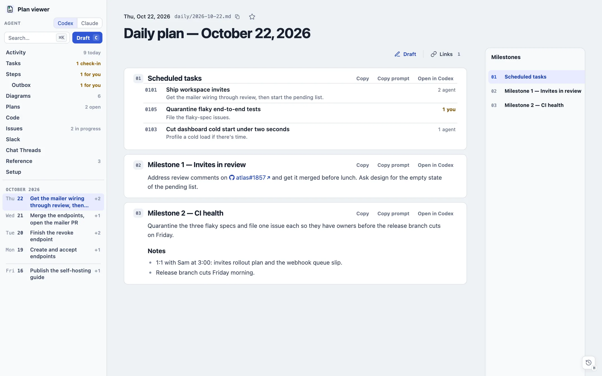
Why it exists
Plain Markdown in git is a good place to plan with agents. Both of you can read it, diff it and edit it, and it outlives any tool. But a folder of files does not answer the questions you have at nine in the morning: what is next, what waits on me, which PR belongs to which task, and what did the agents change overnight.
Handing a step to an agent is the other friction. You copy the task, the step, the prompt and the links into a chat, every time. Then you go back to GitHub, Jira and a terminal to see what happened.
Planboard reads the same files and answers those questions. It never becomes the source of truth. Delete it and your plans are still plain Markdown.
- Without it
- Grep the folder for open steps. Guess which ones are blocked. Paste context into a chat by hand. Switch tabs to find the PR and the issue.
- With it
- Steps ranked by priority and by who moves next. Prerequisites checked. One click saves the full prompt for an agent. PRs, diffs, issues and threads open in place, over the plan.
How a day goes
The loop the viewer is built around, with the sample workspace.
-
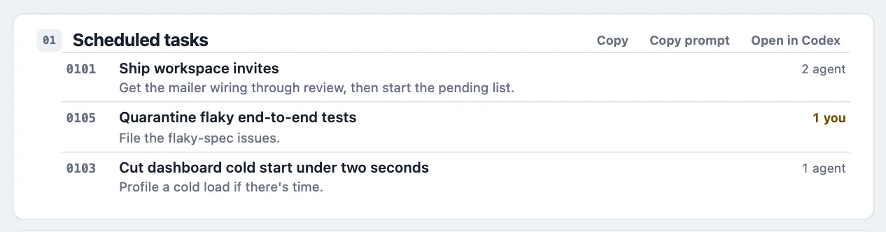
1Open today's plan
Your daily file lists the tasks you scheduled. Each row counts the open steps by who moves next, so
1 youstands out from2 agent. A click opens the step that waits on you. -
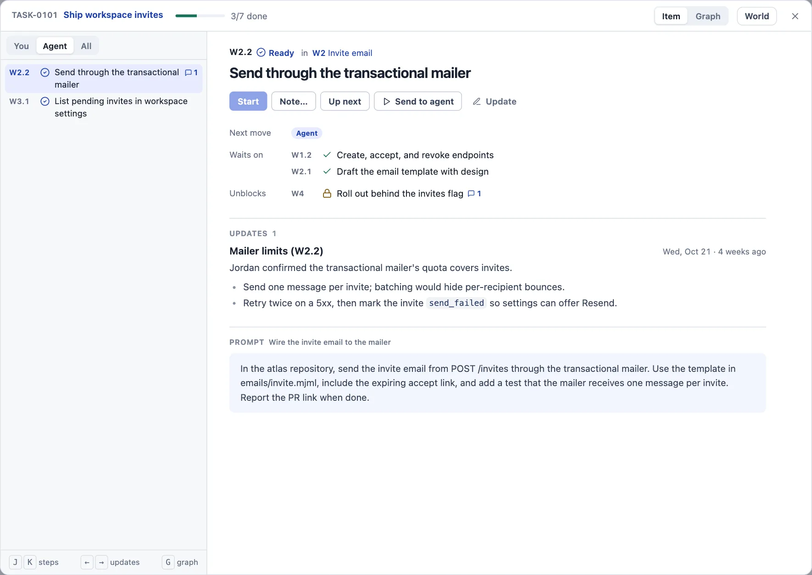
2Hand a step to an agent
The step dialog shows what it waits on, what it unblocks, the updates filed under it and its stored prompt. Send to agent opens that prompt with room for a note. Enter saves it to the Up next queue for an agent thread to work; ⌘Enter opens it as a draft in Codex or Claude now.
-
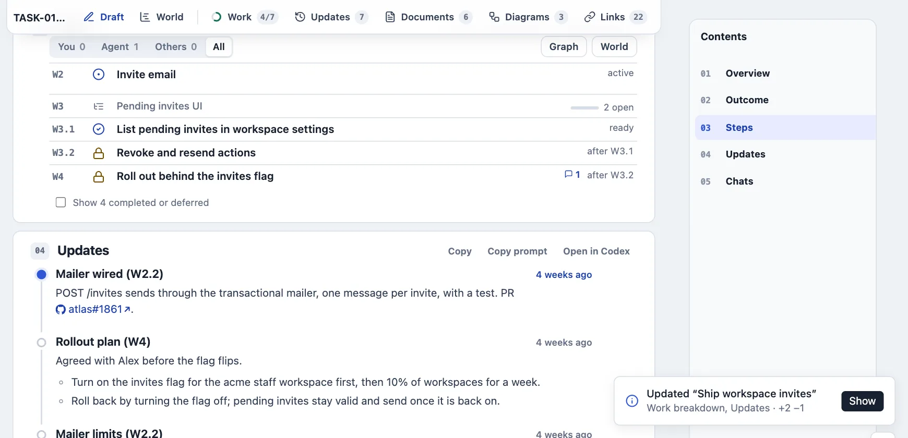
3Watch the files change
The agent edits the task file: it marks
W2.2completed and adds a dated update. The open page redraws in place, and a toast names the sections and the line counts (+2 −1). You never reload. -
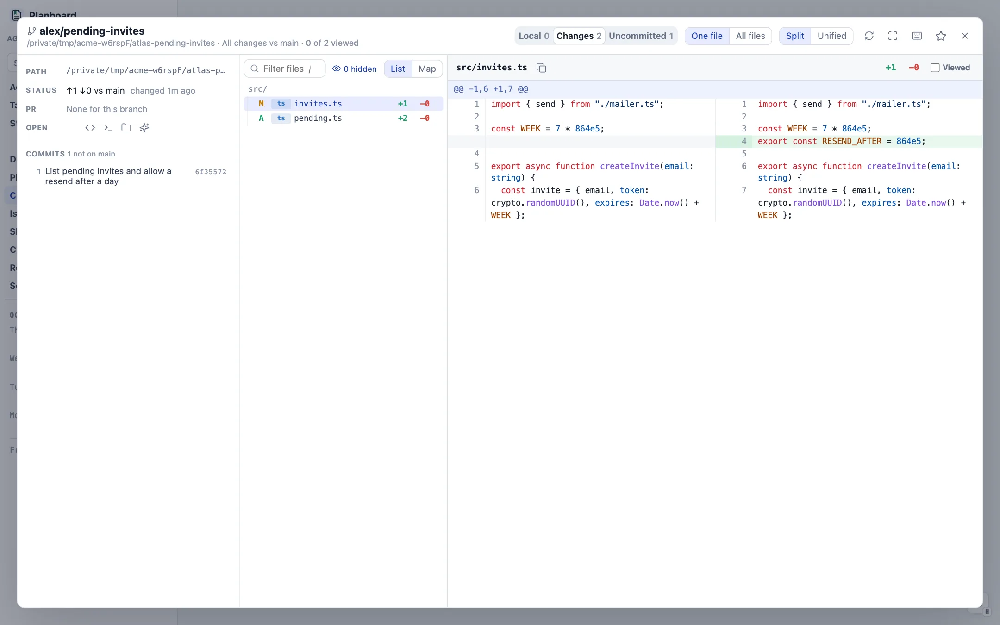
4Review the code it touched
The Code page lists worktrees, PRs with CI and review state, and commits across branches. Every diff opens over the page, with viewed marks, local review notes and a treemap of the change.
-
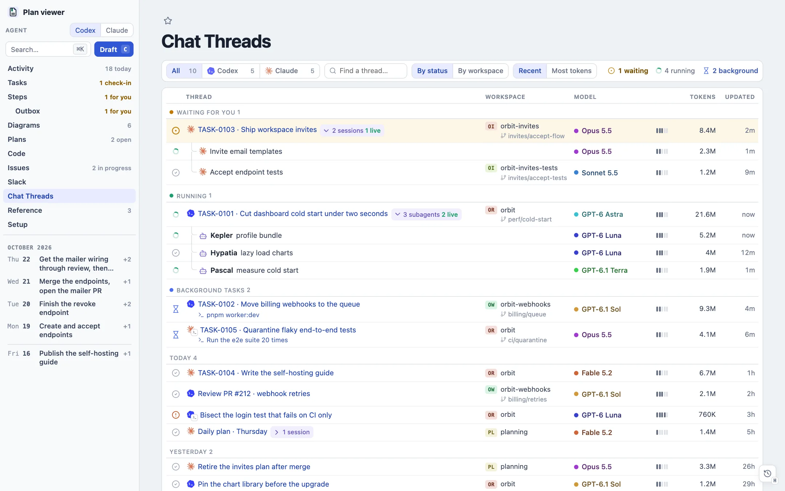
5See which agents need you
Chat Threads lists every local Codex and Claude Code thread: which wait for your input, which still run, and the subagents under each.


Is it worth it?
It is a personal tool, built for one way of working. Here is the honest fit.
Worth it if
- You already plan in text, or want to, and keep it in git.
- You hand work to Codex or Claude Code every day and lose time on the copy and paste around it.
- Your work spans several repositories, PRs and tickets, and you want them beside the plan.
- You like a keyboard: ⌘K finds anything, and single letters move between pages.
Skip it if
- You need a team tracker. It is for one person, on one machine, with no accounts or sharing.
- You want to edit plans in the app. It only reads; you or your agents write the Markdown.
- You are not on macOS and want agent handoffs. Reading plans works anywhere Node runs; the desktop deep links do not.
- You want a phone app. It is a desktop page on localhost.
What it asks of you
- A file format
- Tasks follow one shape: front matter, a
## Work breakdownof steps with(after: W1)prerequisites, andpromptblocks for next actions. Agents learn it from theAGENTS.mdthatinitcopies in, andplanboard lint(also a pre-commit hook) catches mistakes. - Node 22.6 or later
- Nothing else. There are no packages, no database and no build.
- Your own sign-ins
- GitHub, Jira, Linear and Slack are optional, each through your own CLI or token. Tokens stay in a git-ignored
config.toml; the viewer never shows them.
What it never does
- Edit your plans on its own. Every change made in the app (a status, a check-in, a step marked done) is a click you make, written straight into the Markdown.
- Send a message, comment or ticket without your approval of the exact text.
- Start an agent run you did not ask for. Drafts open with Send left to you.
- Leave your machine. It serves
127.0.0.1and calls only the services you connect, plus agit fetchto check for viewer updates.
---
id: TASK-0101
title: Ship workspace invites
status: active
---
## Work breakdown
- W1: Invite model and API [completed]
- W2: Invite email [active]
- W2.1: Draft the template [completed]
- W2.2: Send through the mailer [active] (after: W2.1)
- W3: Pending invites UI [open]
- W3.1: List pending invites [open]
- W3.2: Revoke and resend [open] (after: W3.1)
- W4: Roll out behind a flag [open] (after: W2.2, W3.2)
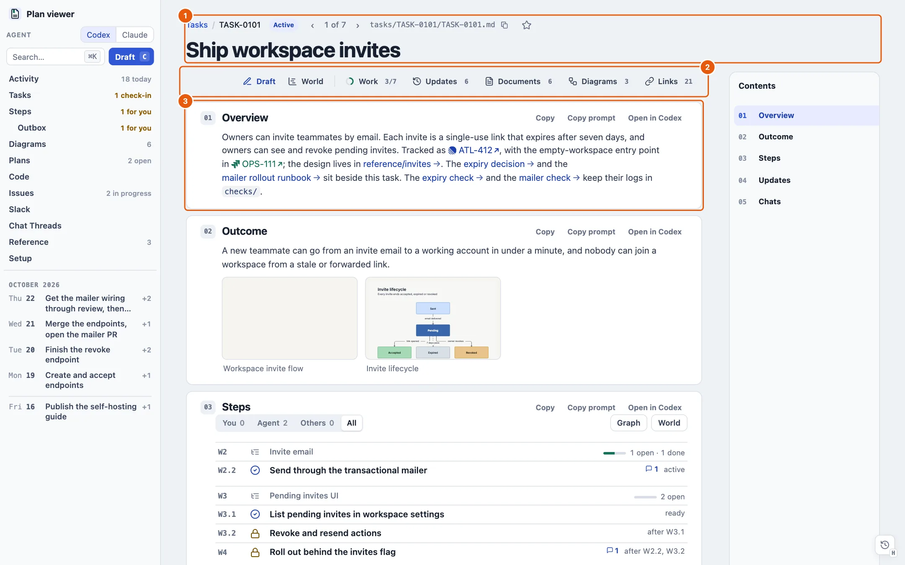
How hard is it to start?
Three levels. Stop at any one.
-
2 minLook at the demo
Clone and run
npm run dev:demoas above. You get every page with fictional data, including Issues and Code. Nothing is written outside the checkout. -
10 minYour own workspace, set up by an agent
Start Claude Code or Codex in the
planboardcheckout and sayRead docs/setup.md and set me up.It makes../planning, starts the viewer, asks you four questions, and writes today's plan and your first real task. Or by hand:mkdir ../planning && cd ../planning ../planboard/cli.ts init # git, hooks, folders, AGENTS.md ../planboard/cli.ts # serves http://127.0.0.1:4173Until the workspace has a plan and a task, the viewer opens on Setup with a Getting started list.
-
As neededConnect what you use
Each integration is off until you set it up, and the Setup page checks each one live and drafts the steps for an agent.
To get You need Agent handoffs macOS with Codex Desktop or Claude Desktop PR and commit titles, the Code and Plans pages ghsigned in, and the repositories you trackJira issues aclisigned in, and a JQL scopeLinear issues A Linear API key Slack titles and threads A Slack token, or Codex's Slack connector Live diagrams The draftably CLI
A workspace is four folders: daily/ (one plan per day), tasks/TASK-NNNN/ (a task and its files), reference/ (standing notes) and config/. The rest of this page is the reference: every page, section by section.
The shell
Every page shares one left rail and one set of keys. The rail tells you where work waits before you open anything.

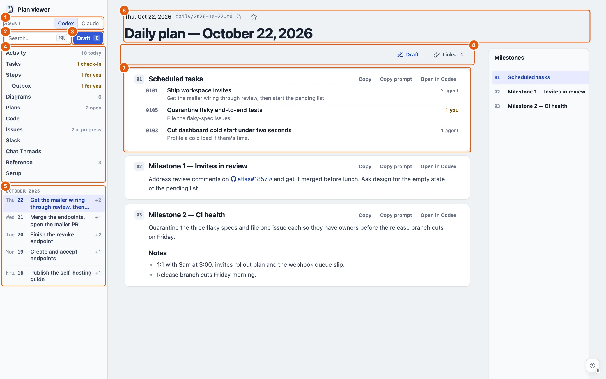
- 1Agent picker
- Codex or Claude. Every draft and launch button opens in the app you pick here.
- 2Search
- Opens the ⌘K palette. / also opens it.
- 3Draft
- A free-form agent draft (C). It names the open document, or the selected text and the section it starts under.
- 4Page links
- Activity, Tasks, Steps, Outbox, Diagrams, Plans, Code, Issues, Slack, Chat Threads, Reference and Setup. Each link shows the one number worth knowing, amber when it needs you: documents changed today, due check-ins, steps for you, PRs waiting on your review, issues in progress. Hover a link for a card of what sits behind it; → moves into the card and Enter opens a row in an overlay.
- 5Day list
- One row per daily plan, newest first, led by the plan's note for its first task and a count of the rest. Hover for every scheduled task with its status. [ and ] step between days.
- 6Breadcrumb and title
- The date or task, the copyable file path, and a favorite star (⌘D). Every overlay has the same star.
- 7Work cards
- Each section of a document is a card with Copy, Copy prompt and Open in Codex. Hover a card and press C to draft it. J and K move between cards.
- 8Document dock
- A sticky bar of panels for the open document: Work, Updates, Diagrams, Documents and Links, with a draft button. See Task documents.
- Recently viewed
- The clock in the bottom-right corner (H) lists every page and overlay you opened, and the documents agents changed. See Search and history.
- Live updates
- The server watches
daily/,tasks/andreference/. When an agent or your editor changes a file, the open page redraws in place without moving you, and a toast names the document, the sections that changed and the line counts (+3 −1). New lines keep a green tint until you leave the document. All tabs share one connection. - Version button
- When the checkout is out of date, a button appears: Update viewer · N new pulls and restarts, Restart viewer or Reload viewer catch the page up.
- Keys
- T today, A tasks, V activity, G code, M plans, I issues, W world view, ? every shortcut. Letter keys pause in text fields. Reload, Back and Forward return to where you scrolled.
Daily plan daily/YYYY-MM-DD.md · T
The viewer opens on today's plan. A plan is ordinary Markdown: a ## Scheduled tasks list that links tasks, then milestones or notes as sections.
- Scheduled tasks
- One panel with a row per linked task: its short number, title, the plan's note for it (with PR, issue and Slack references as links), and on the right its open steps by who moves next (
2 agent,1 you). A waiting task says when it checks in. Click a row to open the step dialog at the first step that waits on you. - Steps panel
- The plan for today's date opens with a thin Up next · You · Agent · Others · All toggle and the first eight steps by priority, each with its score, a state pill and its task. The panel keeps one height, so switching never moves the page.
- Milestone cards
- Every other section is a work card. A card can go to an agent whole, with a note you add.
- Next steps
- A plan can hold its own
## Next stepsprompts for work that belongs to that day only. - Chats
- Links under
## Chats(ChatGPT,codex://threads/…, Claude Desktop sessions) show above the document and open in their app.
Task documents tasks/TASK-NNNN/TASK-NNNN.md
A task is one Markdown file with front matter (id, title, summary, status, project, tags, dates), an outcome, a ## Work breakdown of steps with prerequisites, ## Next actions with fenced prompt blocks, dated updates and chats. Its other files sit beside it in the same folder.
- 1Breadcrumb and title
- Task list, status, each folder of the path (click one to browse it), the copyable path and the star. A stepper (
‹ 3 of 14 ›, keys P and N) walks the task's documents. - 2Dock
- Work (a ring of completed items; the task's steps in a panel), Updates (the dated timeline, newest first), Diagrams (embedded ones, then the task's other
.draftfiles), Documents (every file in the task folder by day, with sections, word counts and a filter; sort by Edited, Created or Name; browse subfolders) and Links (every outgoing link grouped by source, with titles and states, and a Linked from tab for backlinks). - 3Steps panel
- The work breakdown in place of its Markdown: a group header per workstream with a progress bar, then each step with its ID, a ready check or a waiting lock, the full title, and
ready,after W1.2,activeorwaiting. Completed steps hide behind Show N completed or deferred. Graph opens the dependency graph in a popover; World opens the task's world. A row opens the step dialog; C over a row drafts it. - Updates
- Entries written as
- **2026-10-21 — Mailer limits (W2.2):** …. An update that names a step is filed under it and counted on its row. - Images and diagrams
.draftdiagrams embed like images and draw live from their source. Image links become thumbnails. Both open the image viewer.- Lint
planboard lintchecks front matter, step IDs, prerequisites and cycles, and the pre-commit hook runs it on staged plans. A task file that fails to parse still opens, as plain Markdown, listed under Reference as Invalid task.
Step dialog and graph ?step=TASK-0101:W2.2
One step of any task, over whatever page you are on. A step row anywhere opens it, and nothing behind it changes.

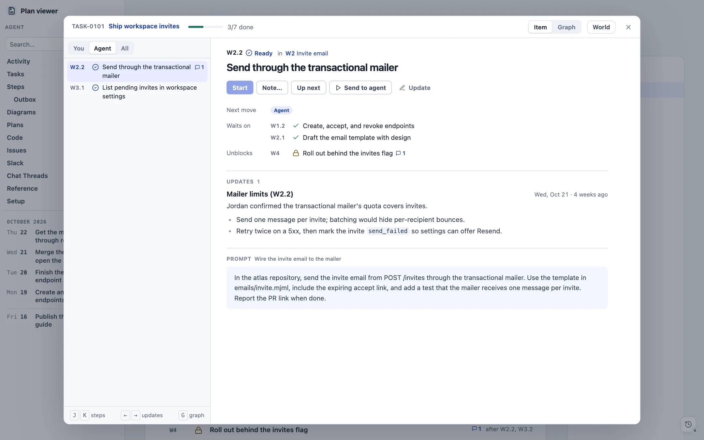

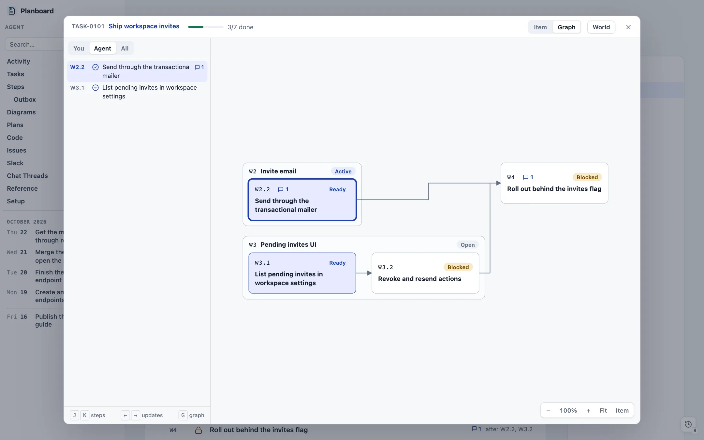
- Top bar
- The task name and progress, Item | Graph, World, and close. Click the task name to make it the page.
- Rail
- The task's steps under a You | Agent | All toggle. J and K walk it; ← and → jump between steps with updates.
- Actions
- The step's own action first (Start, Mark decided, Approve and run, Apply), then Note…, Up next, Send to agent and Update (a draft that revises the step in the task file).
- Facts
- Next move and why it is yours, then Waits on, Unblocks and Contains, one row per step with its full title.
- Sections
- A choice's options with Pick, an outgoing draft with its approval panel, a statement to run, the updates filed under the step, its prompt on a tinted surface, and where else the task mentions it. Empty sections stay out.
- Graph
- Arrows from prerequisite to dependent, the open step outlined. Drag to pan, scroll to zoom around the cursor, F fits, 0 resets, C centers the open step. Click a node to read it.
World views ?world=TASK-0101 · ?world=all · W
Work laid out by day, oldest at the left, so you can see what a task holds without clicking through it.

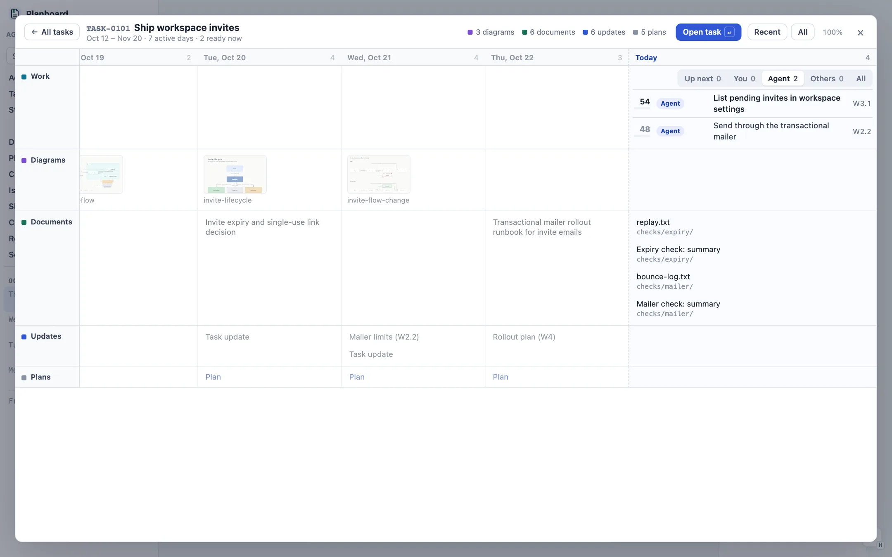

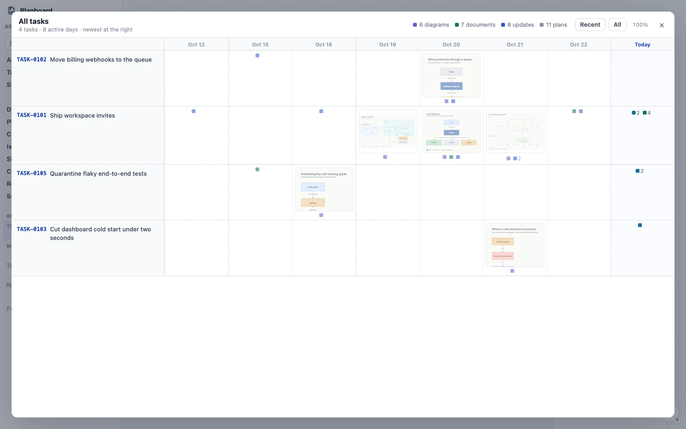
- Task world
- One column per day with activity (quiet stretches fold to a dashed line) and one lane each for work, diagrams, images, documents, updates, the daily plans that mention the task, and other files. Completed steps land on the day an update names them. A wider Today column lists the open steps with the same toggle as today's plan.
- All tasks
- One row per task in the Tasks page's order. Each day shows its newest picture and a dot per kind with a count. Click a mark to open that task's world at that day.
- Moving around
- Drag to pan, pinch or ⌘-scroll to zoom. Recent and All reset the frame. Open task (Enter) makes the task the page; Backspace returns to all tasks. Pictures open the image viewer; documents open in a peek.
Tasks ?view=tasks · A
Every unfinished task in one table, with an inspector for the selected one.

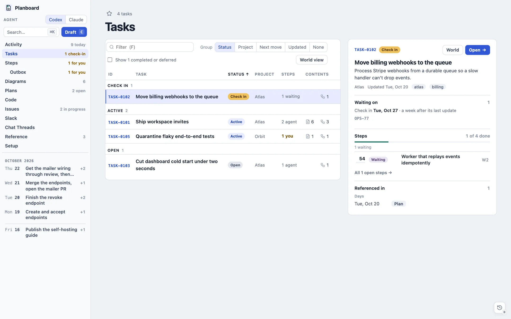
- Toolbar
- Filter (F) by ID, title, summary, project, tags or status. Group by Status (Check in, Active, Open, Waiting), Project, Next move, Updated or None. World view. Show N completed or deferred.
- Table
- ID, title, a status menu (click it, or right-click a row), project, Steps counted by who moves next, and Contents (documents, diagrams and images in the folder). Every column sorts.
- Waiting and check-ins
- Pick Waiting with a check-in of 3d, 1w, 2w or 4w. The task drops below open work and comes back as Check in when the date arrives or when a PR or issue named in its next actions moves.
- Inspector
- The task's summary and tags, Waiting on with each watched item and its state, Steps with progress and the steps of the first mover with anything waiting, and Referenced in (the daily plans that link it). Open or a double-click opens the task file.
Steps ?view=steps
Every open step of every unfinished task, highest priority first. A step is a line in a work breakdown, and it may end in a {kind, size} suffix: - W2.1: Comment on OPS-100 [open] (after: W1) {jira-comment, S}.

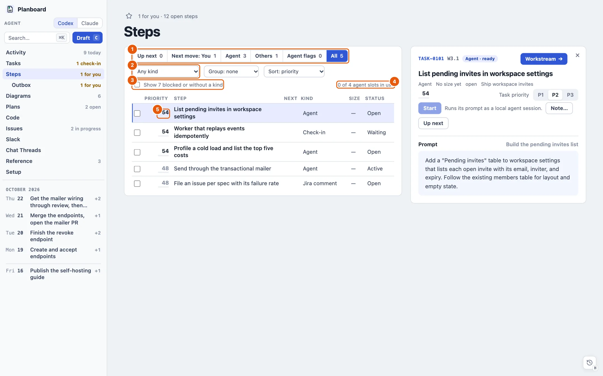
- 1Next move
- Up next, You (decisions, approvals, choices, and friction only you can clear), Agent, Others, Agent flags and All, each with a count.
- 2Kind, group and sort
- Kinds are
agent,check-in,decision,byron(only you), an outbound kind, or a choice (pick-one,pick-any,do-all). Group by Task, Next move, Kind or Status. Sort by priority, Unblocks most, Smallest first or Oldest first. - 3Blocked
- Steps whose prerequisites are not done, and steps without a kind, hide behind this toggle.
- 4Agent slots
- Start runs a step as a local agent session and holds one of
steps.slotsuntil it ends. Withsteps.refill, a finished run starts the next ready step. - 5Priority score
- 0 to 99: the task's
priority:(P1 +30, P3 −20), +25 when today's plan names the step, up to +35 for what it unblocks, +10 when the move is yours, +10 for a small step, a point a day of age. Hover the score for a waterfall of each part. Up next steps sort above every score. - Editing in place
- The checkbox marks a step done with a dated update. The dot toggles Up next. Kind, Size and Status are menus. Double-click a title (or F2) to rename it. Each edit rewrites only that line of the task file.
- Inspector
- The step's task and priority (P1 · P2 · P3 sets the task's), its action, Note…, Up next, and its prompt or what it waits on. A choice shows its options with Pick; a
byronstep with a statement shows Approve and run or Copy statement. - Up next
- A queue for an orchestrating agent thread. Flagged steps carry
nextin their suffix; saved notes join them.planboard nextprints the queue for an agent to work through.
Outbox and outbound drafts ?view=steps&kind=outbound
A task file whose front matter starts with outbound: is a message waiting to go out: a Jira issue or comment, a Slack message, a PR comment, a review request or an email. The Outbox lists the steps those drafts complete.

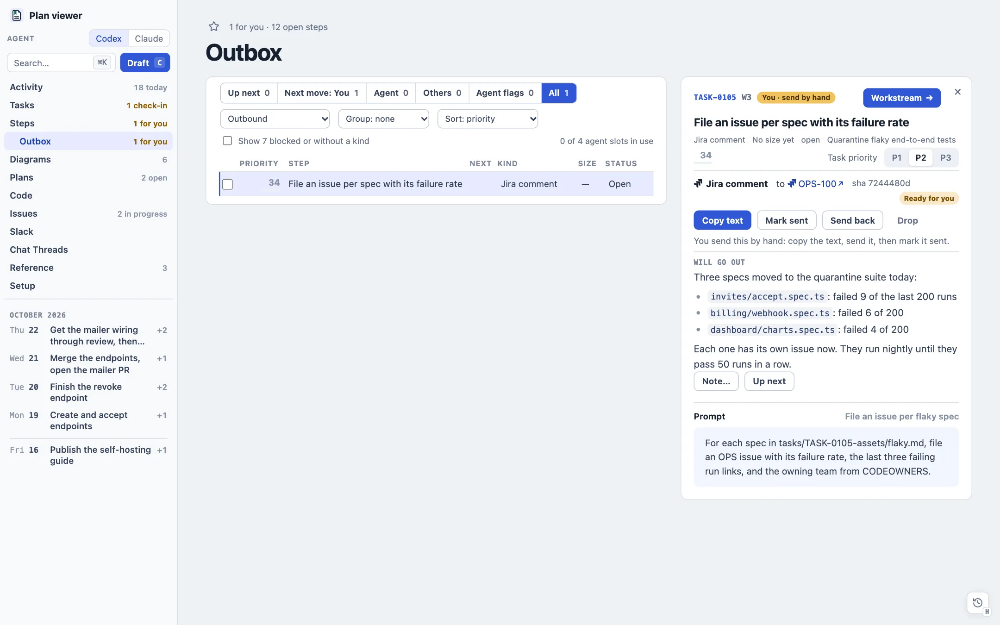

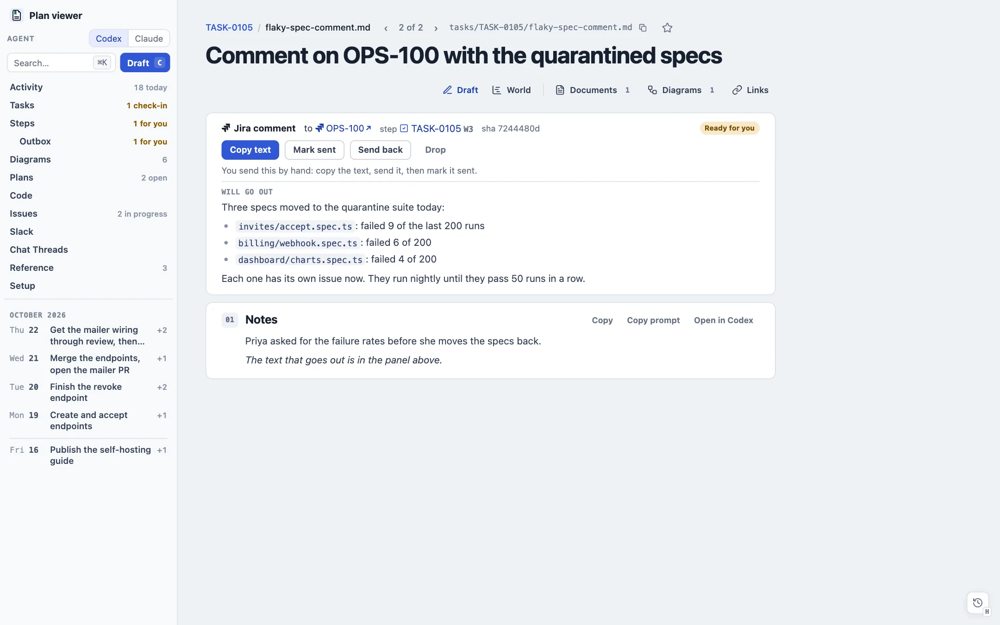
- Approval panel
- The kind, target, step, a hash of the outgoing text and a status, then the exact text under Will go out. The rest of the file is notes.
- Approve and send
- Records your click and the hash, then runs the workspace's
outbound.sendcommand. If the text changed since the page showed it, nothing goes out. - Send back and Drop
- Send back takes your feedback and starts an agent that revises the draft for another approval. Drop retires it.
- Manual sends
- A
send: manualdraft offers Copy text (as rich text) and Mark sent. - Follow-through
- With
steps.followUp, a send saves an Up next note that asks an agent to update the task, the steps that waited on it and today's plan.
Activity ?view=activity · V
Documents, diagrams, issues, open PRs and Slack threads in one list, newest first, grouped by day.

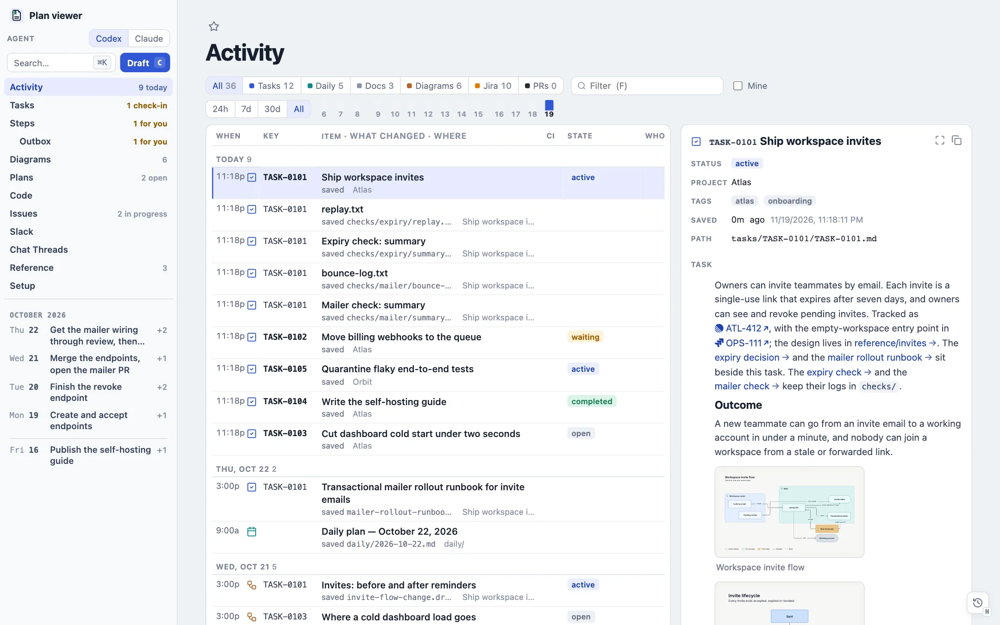
- Toolbar
- Source filters with counts (Tasks, Daily, Docs, Diagrams, Jira, PRs, Slack), a word filter (F), Mine, and a range: 24h, 7d, 30d or All. A two-week strip of stacked bars picks one day (← and → step).
- Rows
- Time, a source icon, a key column that lines up every title, the item with what changed and where it sits (the sections and line counts an agent changed, a PR's branch, an issue's parent), its state colored by meaning, CI for PRs, and the owner's avatar.
- Inspector
- A document's status, last edit and text; an issue's sidebar; a PR's review, CI, reviewers, files and commits; a diagram's drawing. J and K move, Enter opens in full, O opens a new tab, Y copies the link.
- People
- One avatar per person across the viewer: GitHub, Linear, Slack and config identities joined by email and name.
Reference ?view=reference
Everything under reference/: conventions, standing notes and facts that outlive a day. A folder groups its files under its README. Files in config/ stay out of the library; the Setup page lists them.

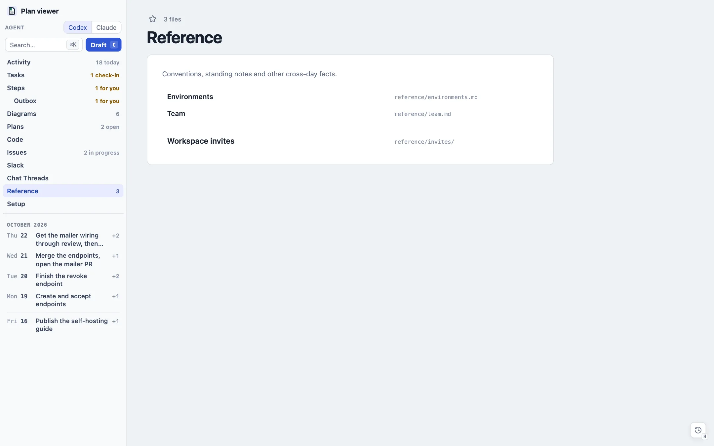
Diagrams and the image viewer ?view=diagrams · ?diagram=path
Diagrams are draftably .draft files kept beside the document and embedded like images. The server draws each one from its source, so no PNG goes stale.

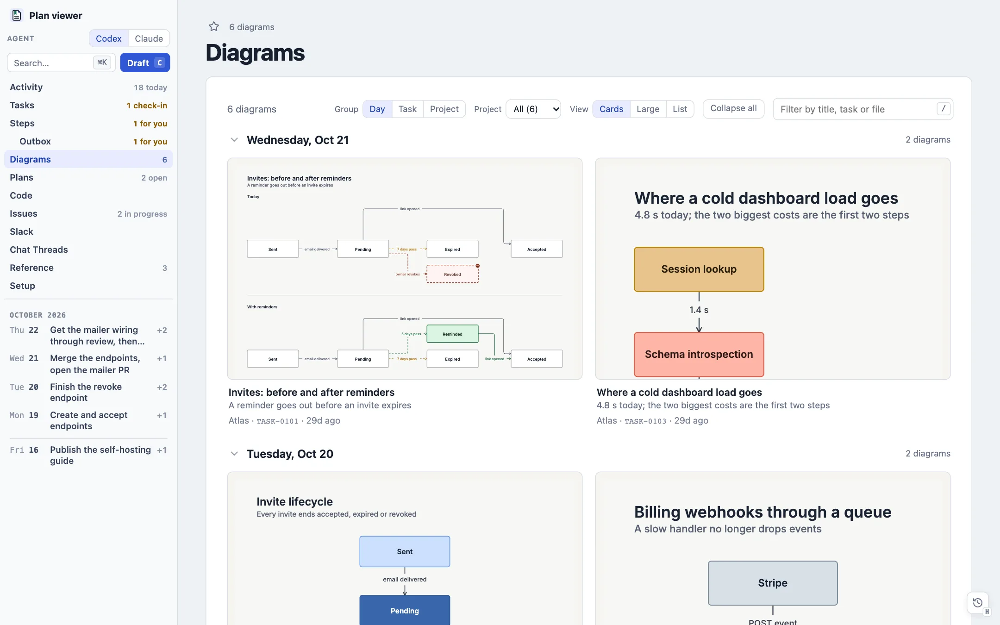

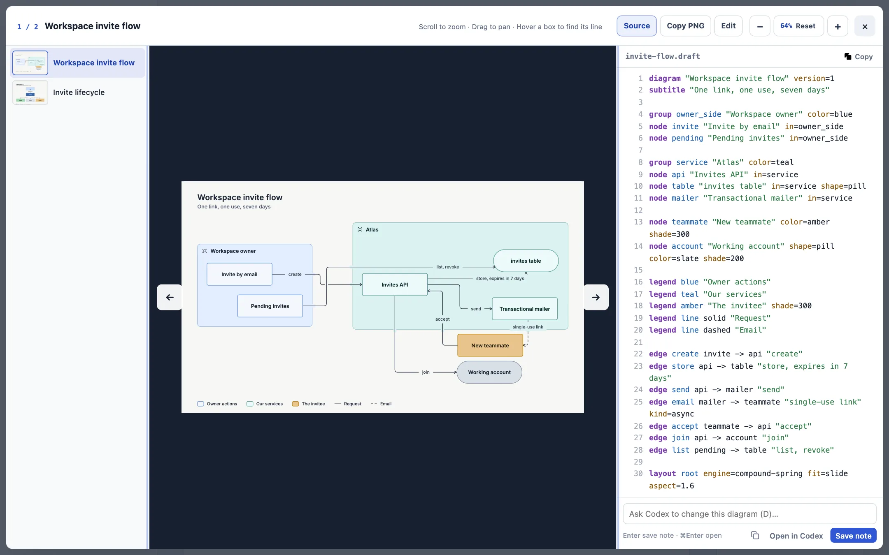
- Diagrams page
- Every
.draftin the workspace as cards. Group by Day, Task or Project; View as Cards, Large or List; a Project menu; Collapse all; a filter (/). The page redraws when a file is saved. - Viewer
- The drawing on the left (wheel zoom that stays sharp, drag to pan) and its numbered source on the right. Hover a box to mark its line and connections; click it to scroll the source there. A rail lists the document's other images and diagrams.
- Viewer actions
- Copy the source, Copy PNG (C, a 2× image that carries its source), Edit (E, opens the draftably editor), and Inline, Side by side or Stacked for a before/after diagram. The box under the source (D) asks an agent about the diagram.
- Live redraw
- Saving a
.draftor an image redraws every picture of it in every open tab, keeping zoom, pan and anything typed.
Plans ?view=plans · M
Initiatives from each tracked repository's origin/main: every initiative-map.json with the briefs beside it, read straight from git, plus the ones open PRs propose and the repo root's unpushed edits.

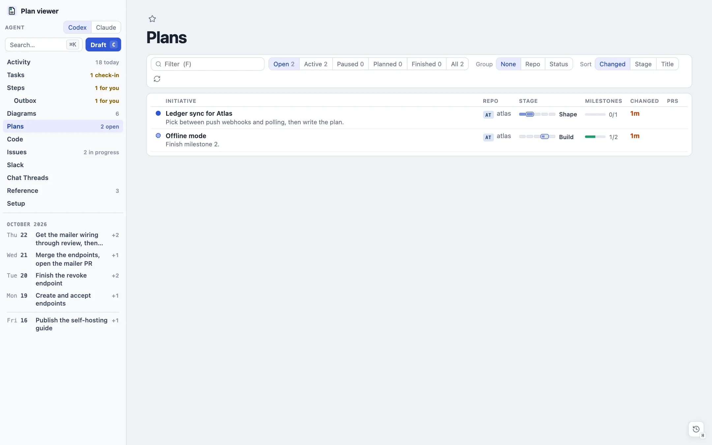

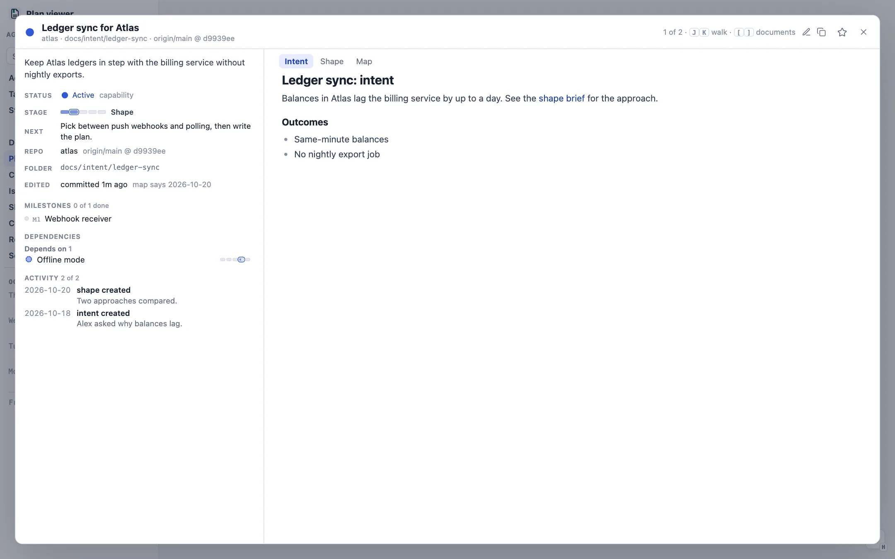
- Toolbar
- Filter, a status scope (Open, Active, Paused, Planned, Finished, All), Group (none, repository, status), Sort (Changed, Stage, Title) and rescan (R).
- Table
- Status, title with its next action, repository, a five-part Stage track (Intent › Shape › Plan › Build › Done), milestones done, last change, and the open PRs that touch it. Tags name each copy's source: proposed, uncommitted or unpushed.
- Inspector
- On wide screens: summary, stage, next action, folder, documents, milestones, PRs, dependencies and history, with Update and Retire.
- Reader
- Tabs for the briefs and the Map, a folder tree of other files, and the facts on the left. J/K walk initiatives, [/] walk documents, U drafts an Update prompt, Shift+U a Retire prompt. GitHub links into an initiative folder open here.
Code ?view=code · G
A control center for the repositories in config/code-repos.json: worktrees, pull requests, commits and cleanup, with full diff overlays. Rows select into a detail pane; Enter opens the overview.


- Pull requests
- Every open PR with CI, review decision, comments, labels, conflicts, size and author; Merged & closed for recent history. Filter by review requested, author, drafts or failing CI. Stacked PRs draw on their base. Stacks turns them into a board with one column per person who moves next, in sections: Your review, Their review, Merge, Fix first, Pick a reviewer, Drafts and Idle. Each section has one agent move (Review all, Check & merge, Fix all, Nudge).
- Worktrees
- Every worktree newest first, with ahead/behind against main, PR and CI state, uncommitted changes, and icons for the editor (E), terminal (X), Finder, a new agent session (S) and the local server (L). Group by Changed, Repo or Folder.
- Commits
- Commits not on main, or everything, across branches. Filter by author (A), Mine (M) or branch (B).
- Cleanup
- Worktrees sorted into safe to remove, review first, too new and keep. Remove runs
git worktree removein batches and keeps branches. Agent review asks an agent to check them first. - PR overview
- A full-screen overlay (
?pr=owner/repo#n): status, reviewers, review skills (1–9), worktree actions, Linked planning documents, notes, commits and the stack, then the diff. Description, Changes or Stack (one diff for the whole stack). One file or All files, Split or Unified, Viewed checkboxes (X), and a Map (T): a treemap of the change with renames drawn as moves, exportable as a PNG. Comments sit under the description; local review notes (C on a selection) follow their code across new commits. - Worktree overview
- The same overlay for a branch (
?wt=path): Local files no commit carries, Changes since the fork point, Uncommitted, and each commit. - Local servers
code.runstarts a worktree's dev server. ⌘K › Local servers lists each with its URL, output, Restart and Stop.- Toolbar
- Summary tiles, a filter (F), Repos with a two-letter mark per repository, refresh (R) and a gear to add or drop a tracked repository. PR data is cached, so the page answers at once after a restart.
Issues ?view=issues · I
Jira issues (through acli), Linear issues and projects, and GitHub issues of the tracked repositories, in one dense list. It is read-only; every change goes through an agent draft.

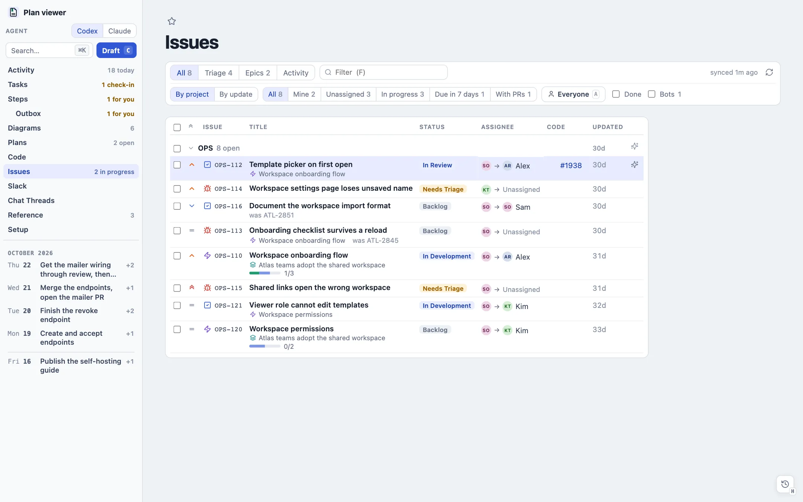

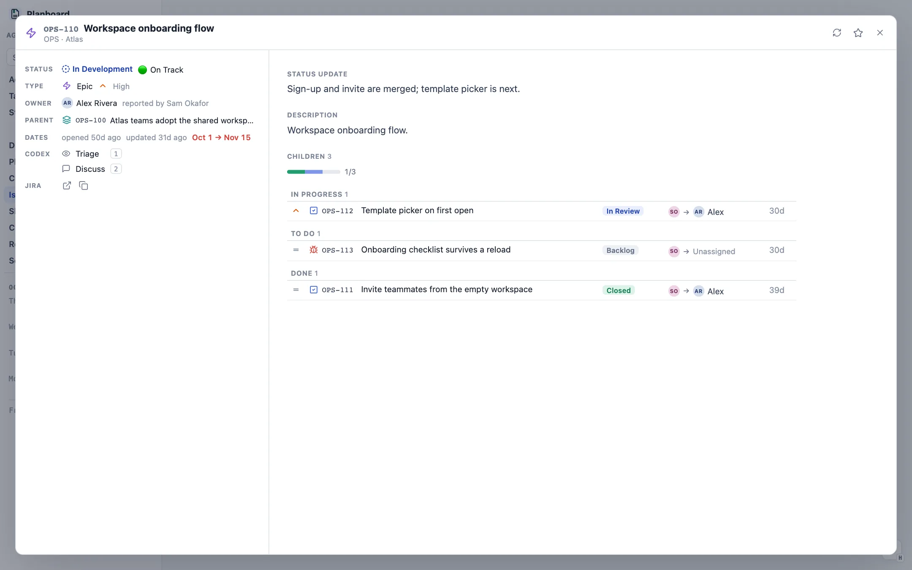
- Tabs
- All (by repo or by update), Triage (walk the queue, X marks seen), Epics (progress over every child, confidence, dates), Migration (the same work across Jira and Linear) and Activity (creations, comments and the status, assignee and priority changes the viewer has seen).
- Scopes
- Mine, Unassigned, In progress, Due in 7 days, With PRs, an assignee picker (A), Done and Bots. A scope shows only when it would narrow the list.
- Rows
- Priority, type, key, title with its parent epic and old key, status, reporter → assignee, the PRs that mention it, and age. Select rows (Space, Shift-click) for one bulk agent draft; the sparkle menu runs a configured skill on one.
- Overview
?issue=KEY: status, type, owner, parent, dates, skills, the status update, description, children by state, comments, In planning (every task and document that names the key) and Code (its PRs). [/] step siblings, P opens the parent.- Sync
- Cached in
tmp/issues-cache.json. Only changed issues are re-read every few minutes, and the difference is the activity feed.
Slack ?view=slack · ?slack=permalink
With slack.codex set, Slack threads read inside the viewer through Codex's Slack connector, with no model call, and are cached in tmp/slack-threads.json. The sample workspace has no Slack connection, so there is no screenshot.
- Slack page
- Every thread the planning documents link. Favorites first, then by last activity or by channel (G). Each row shows who started it, its first line, New replies, reply and people counts, and the documents that cite it. R reads every unread thread in the background.
- Thread overlay
- Reads like Slack: day dividers, grouped messages, emoji and reactions, mentions, a New since you last read divider (N), forwarded messages as cards, Linked from, a link browser (L) and Find (F). The box at the bottom (D) drafts an agent prompt with the thread saved as a file.
- Without the connector
- Slack links open in the desktop app, and a Slack token in
config.tomlstill gives them titles.
Chat Threads ?view=chat-threads
Every local Codex and Claude Code thread on this Mac, read from session metadata, lsof and the Codex state database. It refreshes every few seconds.
- Sections
- Waiting for you, Running, Background tasks, then finished threads by day. Live sections keep their start order, so nothing jumps on a refresh.
- Status rail
- A spinner while a turn runs, an amber dot when the thread waits for you, a check when finished, an alert when a turn stopped, an hourglass while a background command still runs.
- Families
- Subagents and side sessions sit under the thread that started them, with a tree line and a live count. They do not push other threads off the history limit.
- Columns
- App and how the thread started, the model as people say it with its effort as five bars, the working folder and branch, and total tokens (hover for input, cache share and output).
- Toolbar
- App filter, group by status or workspace, sort by recent or most tokens, and search. Enter on a title opens the conversation in its desktop app.
Agent handoffs and notes
Planboard prepares work for agents and leaves the sending to you. Every button that would start an agent chat first saves its prompt as a note, so an orchestrating thread can work the queue.

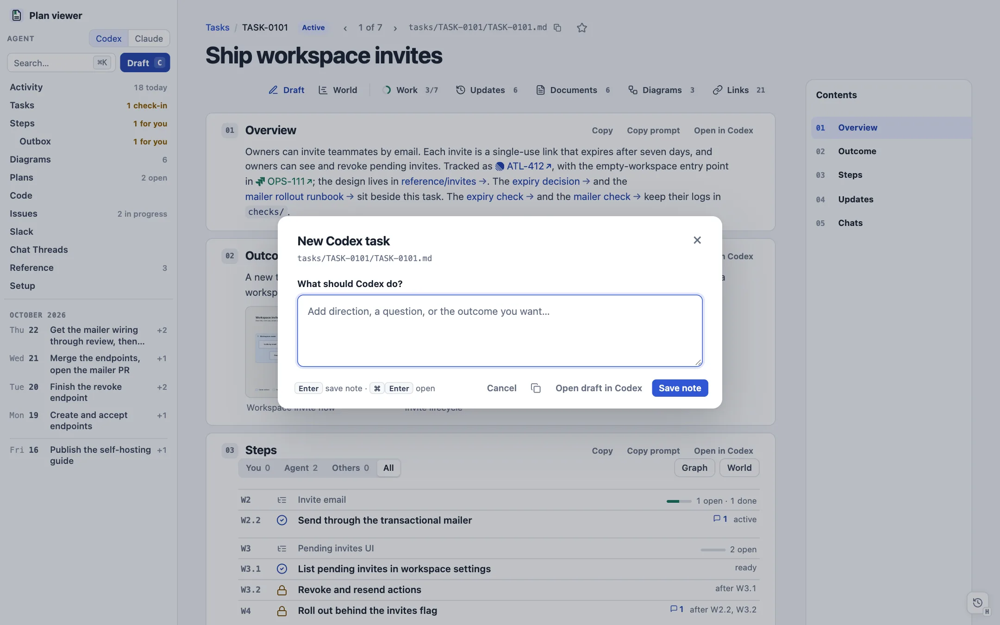
- Composer
- The prompt the agent would get (file, task, selection or section) with room for your words and pasted images. Enter saves it as an Up next note; ⌘Enter opens a draft in Codex or Claude Desktop now; the clipboard icon copies it.
- Note popover
- PR review skills, issue skills, New session, Agent review, initiative Update and Retire, and a step's Start all open a small popover under the button. Your comment goes on top of the prompt for save, copy and launch alike.
- Notes
- A saved note lands in the task's
notes/folder (orreference/notes/) withnote: open, and leads the Up next queue until an agent marks it done. - Drafts, not runs
- The handoff uses the app's deep link (
codex://threads/new?prompt=…) and never submits. Review it and click Send there.PLAN_VIEWER_DRY_RUN=1logs the prompt instead. - Prompt templates
- Every prompt the server builds is a file in
prompts/with{slots}. A copy in the workspace'sconfig/prompts/wins.
Search, shortcuts and history

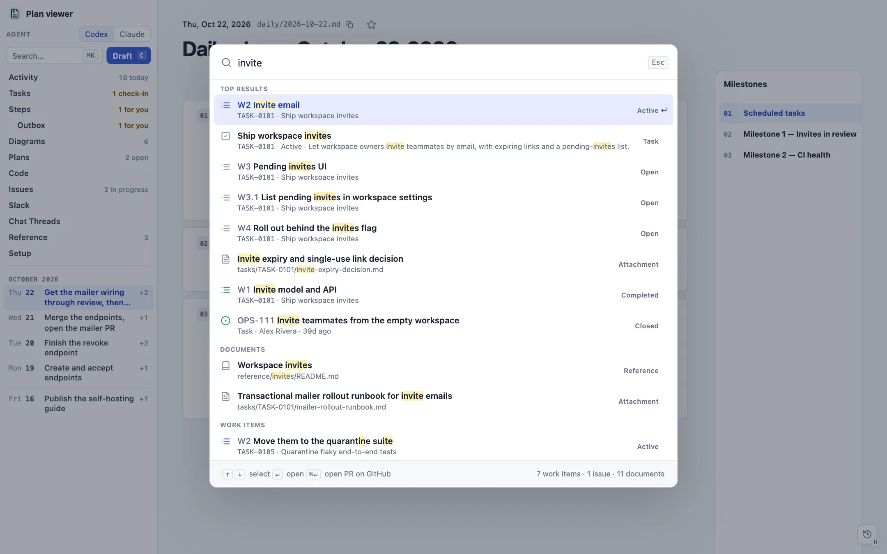

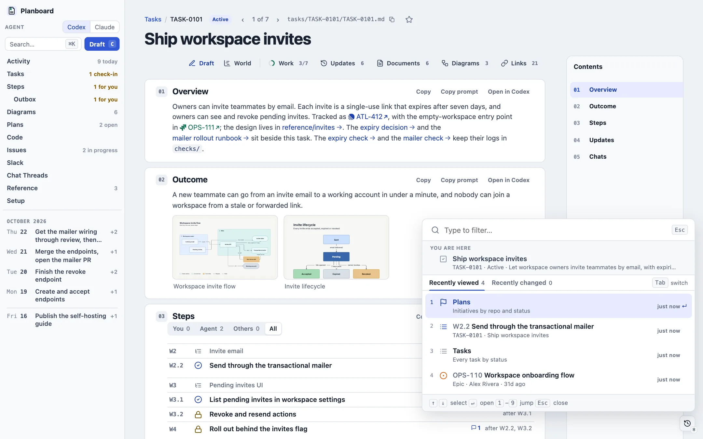

- ⌘K palette
- One ranked list of tasks, work items, issues, pull requests, initiatives, pages and documents. An exact ID wins (
0138is TASK-0138,#2270a PR), live work rises, finished work sinks, and matching forgives a typo. With no query it leads with PRs that need your review. - Recently viewed
- Every page and overlay this browser showed, plus Recently changed (documents edited outside the viewer). Tab flips between them, 1–9 reopen. Closing any overlay also offers Reopen in a toast.
- Favorites
- The star (⌘D) on any document, task, step, page, PR, worktree, issue, initiative or Slack thread. They list at the top of the rail.
- Overlays in the URL
- Every overlay keeps itself in the URL (
?pr=,?issue=,?step=,?peek=,?diagram=…), so a refresh or a shared link reopens it. - Tab briefs
- An agent that opens a viewer tab can say why with
&brief=<Markdown>. The brief floats at the top of the page and hides to a chip.
Tables, links and references

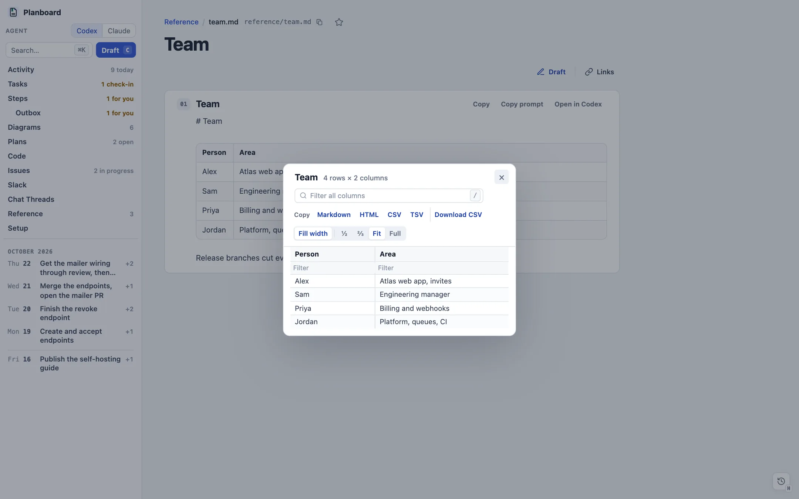
- Document tables
- Columns fit their content. A tall table scrolls in its own frame under a sticky header. Hover for Copy (Markdown, HTML, CSV, TSV), Download CSV and Expand.
- Expanded table
- An overlay you resize from any edge (½, ⅔, Fit, Full, keys 1–4), with sort (Shift-click for a tiebreak), a filter per column (
=x,!x,> <), a filter across all columns, and resizable columns. - Reference links
TASK-0101,#1857,Orbit#27, tracker keys, commit SHAs and Slack permalinks become icon links with live titles and state colors. A click opens the PR, commit, issue or thread overlay in place; ⌘-click goes to the site. Hover for a card with state, review, checks and size.- Code blocks
- Syntax colors that match the diff viewer,
difffences with word marks, and Copy and Download on hover. A box-drawing tree renders as an outline. - Document peek
- A click on a cited document from an overlay or inspector reads it in a peek over the page; Enter opens it in full.
Setup ?view=setup
What the viewer can use and how it is set up. While a workspace has no daily plan or no task, the viewer opens here and leads with Getting started: a first task, today's plan and your name, each with a prompt an agent can carry out.

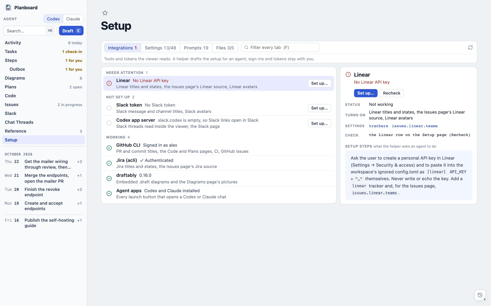
- Layout
- Four tabs, each one list in the same row (status, name over one line of detail, value, one action) beside an inspector for the selected row. The tab and row stay in the URL; J/K move, and the filter searches every tab at once with matches highlighted.
- Integrations
- GitHub CLI, Jira (
acli), Linear, Slack token, the Codex app server, draftably and the agent apps, each checked live and listed worst first: red is broken, gray is not set up, green works. Set up… drafts the steps for an agent and leaves sign-ins and tokens to you. - Settings
- Every
config/viewer.jsonkey with its value and meaning. Text, number and on/off keys save in place; lists and commands show their JSON in the inspector and draft the change for an agent. - Prompts
- Three routines (Daily plan, Daily review, Up next sweep) with Start…, then every prompt the viewer sends. The inspector shows the text with its slots marked, and Edit… makes a copy in
config/prompts/. - Files
- The files in
config/and what reads each one, with its contents in the inspector.config.tomlholds tokens, so the page shows only whether it exists.
Command line
Run each from the workspace, through the checkout's cli.ts.
| Command | Does |
|---|---|
serve | Starts the viewer at http://127.0.0.1:4173 and restarts it when the viewer's own code changes. |
init | Makes the folder a workspace: git and its hooks path, .gitignore, folders, and the agent guide. Never replaces a file. |
lint [paths…|--staged] | Checks task front matter, work breakdowns, step kinds, outbound drafts and action references. |
links [--fix|--warm|--refresh-slack] | Reports broken links, unknown tasks, unlinked task files and unnamed Slack channels. |
move <from> <to|TASK-NNNN> | Moves one file and repairs every link to it. |
migrate [--write] | Moves a workspace from the older layout. A dry run unless --write. |
task TASK-NNNN | Prints a task's context in compact form for an agent. |
next [--json] | Prints the Up next queue for an agent thread to work through. |
Server API
The browser talks to server.ts over plain JSON routes on localhost. Agents and scripts can read the same routes.
| Area | Routes |
|---|---|
| Documents | /api/documents, /api/document, /api/asset, /api/changes, /api/events (live updates), /api/task-status, /api/task-world, /api/waiting |
| Steps and notes | /api/steps and /api/steps/{pick,start,run,apply,done,edit,next,priority}, /api/notes, /api/dispatch (agent drafts) |
| Outbound | /api/outbound and /api/outbound/* (approve, send back, drop, mark sent) |
| Code and plans | /api/code, /api/code/{pr,diff,commit,commits,worktree,file,notes,sides,run,runs,pr-index,plans,plan-doc,plan-map} |
| Issues and people | /api/issues, /api/issues/{issue,fetch,agent}, /api/people, /api/link-metadata |
| Slack and chats | /api/slack, /api/slack/{thread,sync,agent}, /api/chat-threads |
| Diagrams | /api/diagram, /api/diagram/{open,copy}, /api/diagrams |
| Setup | /api/config, /api/setup, /api/setup/{config,file,agent,prompt}, /api/version, /api/version/update |